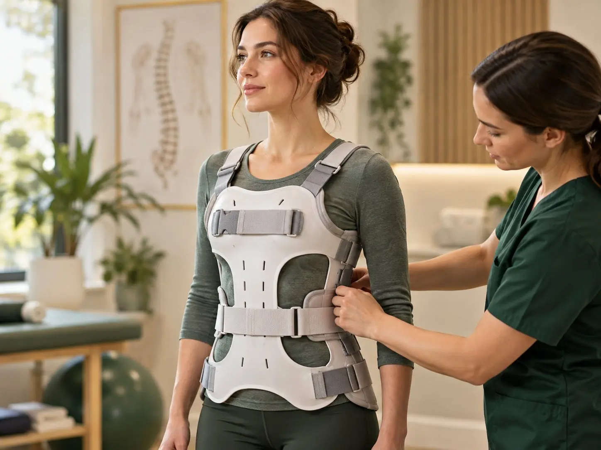
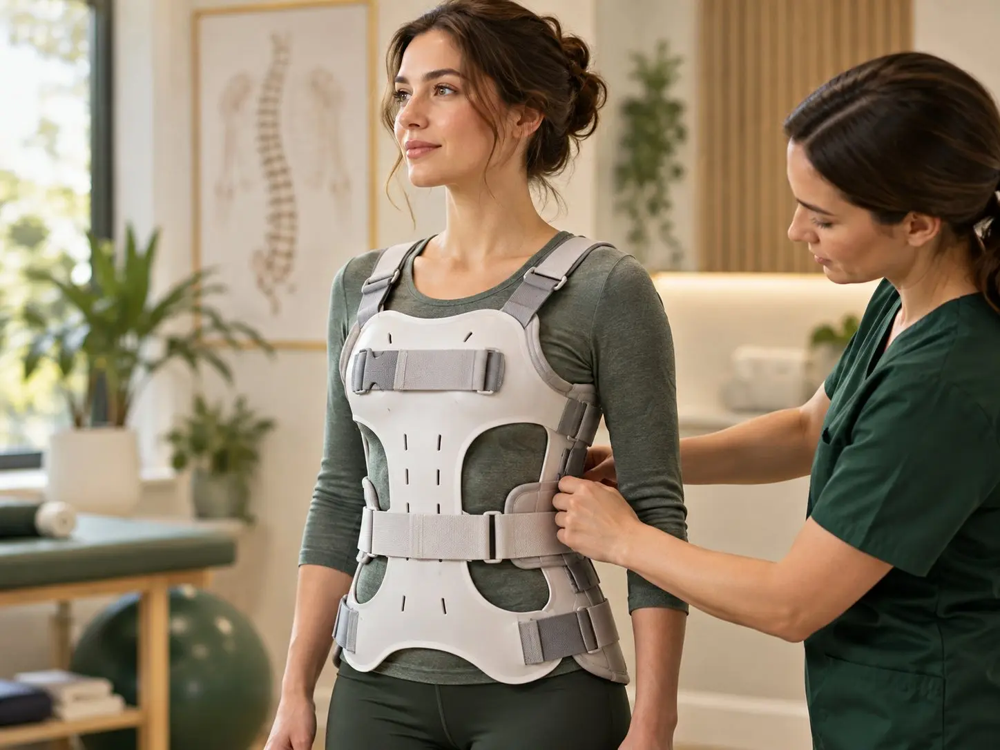
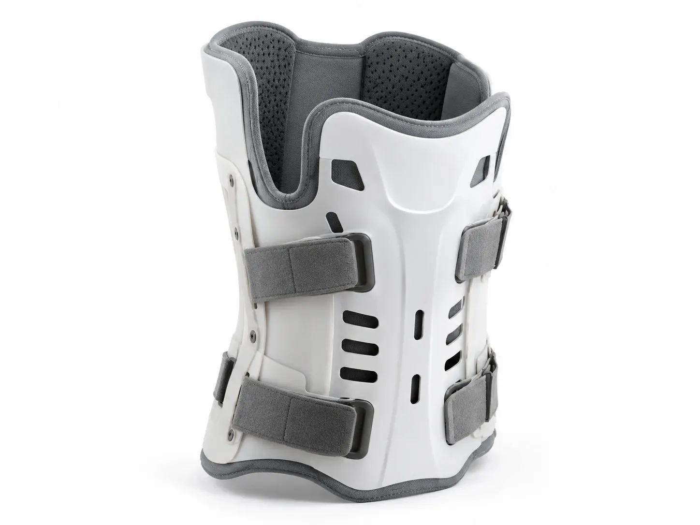

How to Prepare for Your First Visit to a Prosthetist or Orthotist
What a prosthetist and orthotist actually do, plus a simple checklist of what to bring, what to wear and what to ask.

Braces for scoliosis, back injuries, spine surgery and healing fractures. We fit them to hold you in the right position without rubbing or digging in.

A spinal brace (also called a spinal orthosis) is a firm support worn around your trunk. It can hold your spine in a safer position, limit movements that might cause harm, or help your spine heal after an injury or surgery.
A brace only works well if it fits. Too loose and it does little. Too tight and it rubs, pinches and gets left in a drawer. We measure and adjust carefully, so it’s firm where it needs to be and comfortable everywhere else.
Scoliosis is a sideways curve of the spine. In children and teens who are still growing, a brace can help stop the curve from getting worse. It doesn’t usually straighten the spine, but it can make a real difference while the body is growing.
Scoliosis braces only work if they are worn for the hours your doctor recommends. We take time to make them as comfortable as we can, so your child can wear them under normal clothes and get on with school and play.
These names describe how much of the back the brace covers:
They’re used after some spine fractures, after spine surgery and for some painful back conditions. Your doctor will usually decide which one you need, and we make sure it fits properly.
Some neck conditions and injuries need a collar or neck brace. We can fit and adjust these when your doctor recommends one.
A fracture brace supports a broken bone while it heals. For some fractures of the upper arm, forearm, lower leg or ankle, a brace can be used instead of a plaster cast or after the cast comes off, if your doctor agrees.
Fracture braces have straps you can tighten as swelling goes down. They also let nearby joints move a little, which some doctors prefer for certain fractures. We fit the brace, show you how to adjust it and check it as your arm or leg heals.
Not sure if a brace is right for you? Our FAQ page answers many common questions, or you can book a consultation.

For a brace after an injury, a fracture or surgery, we work from your doctor's or surgeon's instructions. Please bring any letters or scan reports you have. If you're not sure what you need, call us and we'll tell you what to bring.
It varies from person to person. Many scoliosis braces are prescribed for a set number of hours each day, and that often includes wearing it at night. Your doctor and orthotist will give you an exact plan. Sticking to it is one of the biggest things you can do to help.
Some braces are made to be worn at night and some are not. Follow the plan your doctor and orthotist give you. If your brace stops you sleeping, tell us, as small changes can often help.
Wearing a brace as advised, for a set time, is usually fine. Your doctor or physiotherapist may give you exercises to keep your muscles strong. Please don't wear it for longer than advised, or stop wearing it early, without asking first.
It depends on your fracture and your doctor's advice. Some braces can come off for washing and some must stay on. Never remove a brace your doctor has told you to keep on.
This page gives general information only. It isn't medical advice. Please talk to your doctor or our team about your own needs.

What a prosthetist and orthotist actually do, plus a simple checklist of what to bring, what to wear and what to ask.